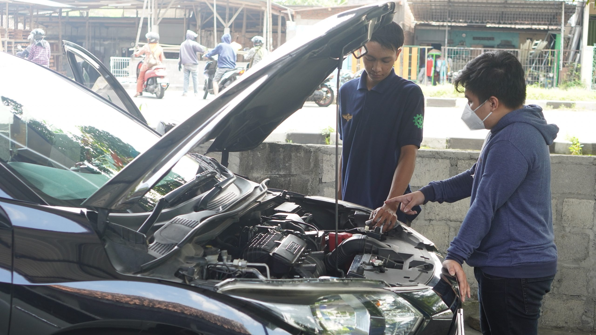
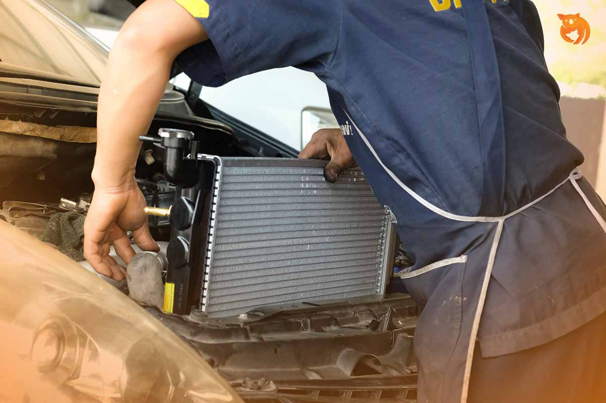

LAYANAN UNGGULAN

SERVICE MESIN
SERVIS MOBIL MOBENG MEMBERIKAN LAYANAN SERVIS RASA MESIN BARU MEMBUAT MESIN LEBIH BERSIH & TARIKAN JADI ENTENG.

GANTI OLI
BENGKEL OK MENYEDIAKAN OLI EKSKLUSIF X-TEN YANG MAMPU MENINGKATKAN PERFORMA MOBIL ANDA.

SPOORING & BALANCING
BANTU MOBIL TETAP STABIL DAN MENJAGA KEAMANAN AGAR KONDISI BAN TETAP DALAM POSISI YANG SEIMBANG.

TUNE UP
MEMERIKSA KONDISI FUNGSI MESIN AGAR TIDAK MENGALAMI MASALAH.